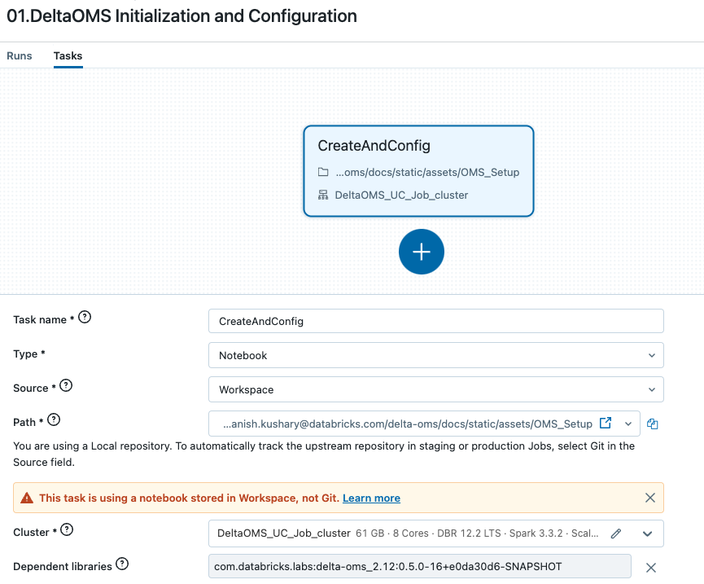
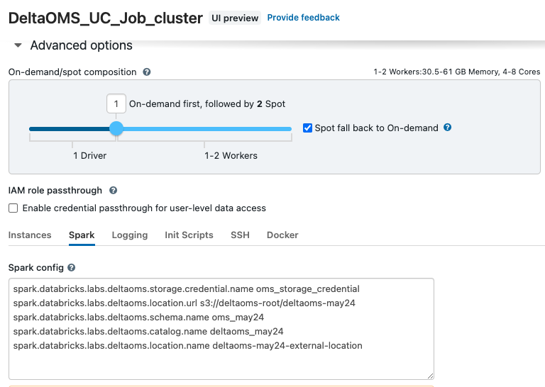
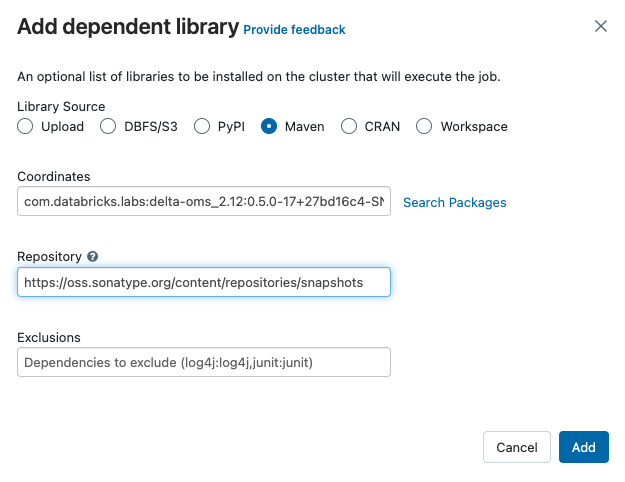
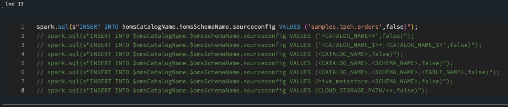
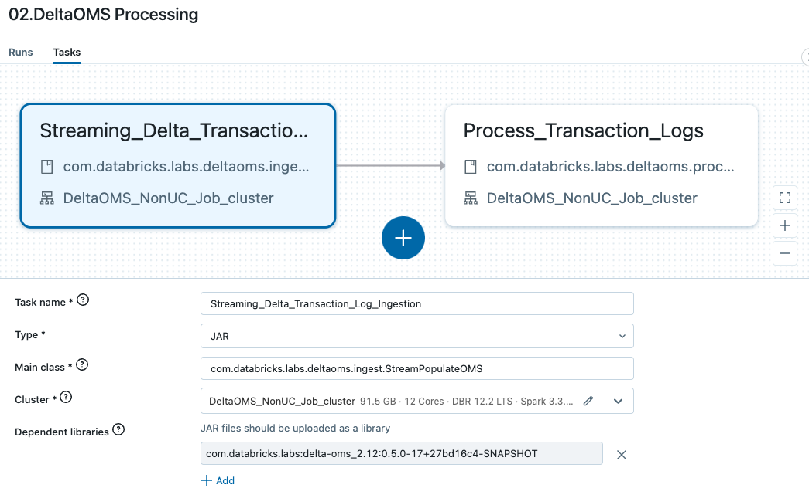

DeltaOMS is configured through Spark configurations with prefix spark.databricks.labs.deltaoms.
Refer to Additional Configurations section below for more details on the available configurations.
Follow the below steps to initialize the DeltaOMS centralized Database and tables.
Import and Open the DeltaOMS Setup notebook into your Databricks environment. You could also mount the DeltaOMS Github repo
Refer to the provided DeltaOMS workflow creation json template to create a workflow (using create api) for DeltaOMS initialization and configuration through the notebook 
Set the Spark configurations for initializing DeltaOMS on the defined cluster 
or modify the value of the variables for catalog name, schema name, external location URl and name as appropriate for your environment on the notebook
| Variable | Description |
|---|---|
| omsLocationUrl | Base location/path of the OMS catalog and schema on the Delta Lake. This is created as an EXTERNAL LOCATION on Unity Catalog (UC) |
| omsLocationName | Name of the UC EXTERNAL LOCATION for the OMS catalog and schema on the Delta Lake |
| storageCredentialName | Storage credential name for the UC EXTERNAL LOCATION created for DeltaOMS. This is usually provided by your admin |
| omsCatalogName | OMS Catalog Name. This is the UC Catalog where all the DeltaOMS tables will be created |
| omsSchemaName | OMS Schema Name. This is the database where all the Delta log details will be collected in tables |
Make sure the appropriate DeltaOMS jar(as a library through Maven) is attached to the Unity Catalog Enabled cluster 
On the notebook, INSERT reference to the input data objects (like Catalog, Schemas, Tables etc) those will be monitored by DeltaOMS into sourceconfig table

Refer to the Developer Guide for more details on the tables.
Execute the created workflow to create the OMS External Location , Catalog, Schema and tables and configure the paths for the input sources
The notebook executes the com.databricks.labs.deltaoms.init.InitializeOMS and com.databricks.labs.deltaoms.init.ConfigurePaths main classes
Upon execution, inspect the notebook output to validate the DeltaOMS tables and configurations were successfully created
Next, we will create a workflow composed of two tasks for ingesting the Delta transaction logs and processing them. You could create them as separate workflow also.
Use the provided Processing Workflow json template to create the workflow. The workflow comprises of two tasks :
The first databricks job task will stream ingest the delta logs from the configured delta tables and persist in the rawactions DeltaOMS table.

The main configurations for the job are:
Main class : com.databricks.labs.deltaoms.ingest.StreamPopulateOMS
Example Spark Configurations to be set for the task on the cluster :
spark.databricks.labs.deltaoms.checkpoint.suffix _may24_1234567
spark.databricks.labs.deltaoms.checkpoint.base s3://deltaoms-root/deltaoms-may24/__deltaoms/_checkpoints
spark.databricks.labs.deltaoms.storage.credential.name oms_storage_credential
spark.databricks.labs.deltaoms.location.url s3://deltaoms-root/deltaoms-may24
spark.databricks.labs.deltaoms.schema.name oms_may24
spark.databricks.labs.deltaoms.catalog.name deltaoms_may24
spark.databricks.labs.deltaoms.location.name deltaoms-may24-external-location
NOTE: These needs to run on a Non Unity Catalog Enabled cluster
Refer to Additional Configurations for full configuration details
The second job task will process the raw actions and organize them into Commit Info and Action snapshots for querying and further analytics.
The main configurations for the job are:
Main class : com.databricks.labs.deltaoms.process.OMSProcessRawActions
Note: For more details on multiple tasks workflows refer to Databricks Workflows.
Refer to the Developer Guide for more details on multiple stream approach for DeltaOMS ingestion and the processing job.